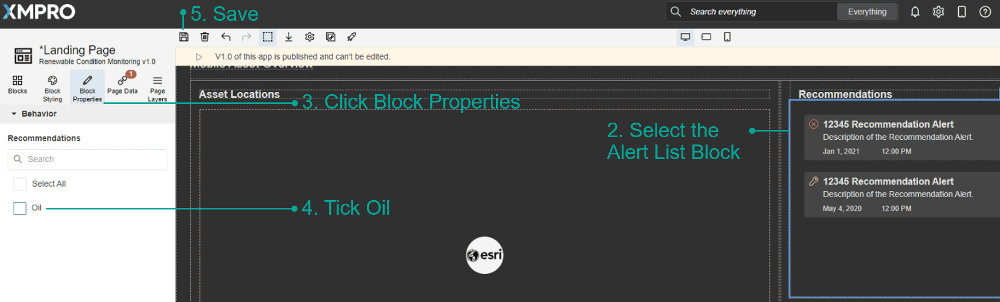

v4.4.10
Integrations
Note
Security update: Mitigate a high-severity vulnerability by upgrading Azure SQL and SQL Server Agents. Note: This update is incompatible with Stream Host versions prior to 4.3.7.
| Change Type | Name | Description |
|---|---|---|
| Security | Azure SQL Listener v5.50 Azure SQL Context Provider v5.50 Azure SQL Action Agent v5.50 | Applied the CVE-2024-0056 security vulnerability update |
| Security | SQL Server Listener v5.50 SQL Server Context Provider v5.50 SQL Server Action Agent v5.50 | Applied the CVE-2024-0056 security vulnerability update |
| Enhancement | MQTT Listener v3.02 MQTT Action Agent v3.02 | Support status sending to the broker so you can monitor whether the Agent is online. |
| Enhancement | OSIsoft PI Connector v2.24 | Improve performance. Support clearing metadata cache. |
| Enhancement | OSIsoft PI Listener v4.04 | Improve performance. Support configurable element cache duration. Fix exclusion condition issue. |
| Enhancement | OSIsoft PI Action Agent v3.10 | Improve performance. Fix variables validation error. |
| Fix | Azure Data Explorer Action Agent v1.05 | Added DLL to resolve an error when publishing on a Stream Host v4.4+ |
| Fix | Azure Data Factory Action Agent v1.10 | Added DLL to resolve an error when publishing on a Stream Host v4.4+ |
| Fix | Azure Digital Twin Action Agent v1.21 | Added DLLs to resolve an error when publishing on a Stream Host v4.4+ |
| Retired | Azure Time Series Listener | Microsoft retired this service in July 2024 |
App Designer
| Change Type | Description |
|---|---|
| Enhancement | We've added the Application name as a hover tooltip to the Application listing so that you don't have to expand the blade to see the longer names. |
| Fix | I selected 'None' in the new Alert Discussion Block, but it reverts to 'Entity'. You can select 'None' as the type in the Alert Discussion Block, so that there is no header grid. |
| Fix | I've ticked to Group By Asset in a Time Series Analysis Block, but I can't choose an Asset Id Expression because the dropdown is empty. The Asset Id Expression dropdown is populated, but there will be a follow up fix in a future release because when a value is later selected for the secondary data source, the dropdown value will appear empty. This is a UX issue only - your value is still present and the block will work as expected. |
| Fix | My Free Trial's demo App, Renewable Condition Monitoring, is not displaying any alerts, but if I navigate to the recommendations menu I can see alerts have been generated.
|

Data Stream Designer
| Change Type | Description |
|---|---|
| Fix | In v4.4.9, I opened a data stream with multiple versions and noticed the first version opened and not the latest. Opening a data stream shows the latest (highest number) version. This and related functionality have also been optimized for a faster experience. |
Last modified: November 24, 2025